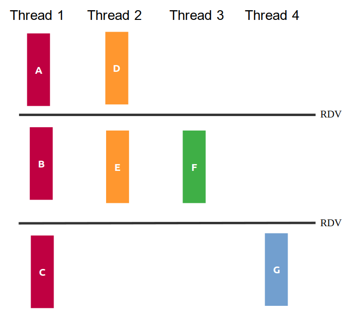

Nesta prova iremos avaliar os objetivos de aprendizagem trabalhados na segunda metade do curso. Cada pasta contém os arquivos de uma questão da prova, incluindo arquivos .c para vocês colocarem suas soluções.
duas horas, com início às 15:45 e término às 17:45. Desconsidere o tempo do Blackboard/Smowl.Cole os arquivos desta prova em seu repositório de entregas da disciplina, tendo estes caminhos a partir da raiz:
provas/af/q1provas/af/q2provas/af/q3provas/af/q4Vamos utilizar o servidor para receber a nota em cada questão. Será necessário soltar releases! Dentro de uma questão com várias partes, a correção será sequencial: ao primeiro problema, a correção irá parar (ou seja, precisa resolver os problemas anteriores para que os próximos critérios sejam considerados).
As issues já terão a sua nota no exercício. Como de costume, um pass significa que o servidor não encontrou problemas em sua solução (não que ela esteja correta!). Teremos uma fase de validação extra (manual) pelos professores, envolvendo, por exemplo:
A figura q1/sincronizacao.png ilustra as relações de dependência entre as partes das funções thread1, thread2, thread3 e thread4, mostrando que algumas delas poderiam ser feitas de maneira concorrente. Repare que há 2 momentos em que as threads se sincronizam (RDV).

Seu trabalho nesta questão será:
OBS:
Você não deve introduzir novas dependências. Ou seja, se seu programa criar relações de dependência além das da figura seu trabalho valerá no máximo 50%.
Não altere os printf existentes, nem adicione novos.
Como descrubro minha nota?:
Será pelo corretor automático. Suba as alterações para o git e solte uma release:
git tag -a afbccq1.x.y -m "enviando a afbccq1.x.y"
git push origin afbccq1.x.yNeste exercício, você se imaginará estagiando na empresa Mercado Livre, ajudando a implementar uma solução que conte caixas presentes numa foto do estoque. Mas calma! A sua parte é desenvolver o programa q2 que recebe como argumento da linha de comando o nome de um arquivo de imagem (a foto do estoque). Sua tarefa é chamar outro programa, que simula um processamento de imagem, e contar quantas chamadas deste programa foram necessárias fazer para a correta avaliação.
Exemplo de como seu programa q2 será chamado:
./q2 imagem1.pngUma tarefa comum em programação de sistemas é integrar com outros programas instalados. Assim sendo, a imagem (no exemplo é imagem1.png) deverá ser examinada pelo programa digitaliza, disponível de forma compilada para x86 na pasta da questão.
O executável digitaliza tem a chamada no padrão ./digitaliza arquivo 1 onde arquivo representa um arquivo de imagem e 1 representa quantas vezes você já tentou processar este arquivo. Assim sendo, na primeira vez que o digitaliza é chamado para processar o arquivo imagem1.png devemos utilizar ./digitaliza imagem1.png 1. Caso o processo falhe, então tentamos novamente usando ./digitaliza imagem1.png 2. Se falhar mais uma vez, o uso deve ser ./digitaliza imagem1.png 3 e assim sucessivamente até que ele saia com sucesso.
O programa digitaliza retorna 0 quando a chamada é feita com sucesso, ou -1 quando recebe uma chamada errada (quantidade incorreta de argumentos). Você não precisa se preocupar com o que de fato o programa digitaliza faz, apenas considere que a ele deve processar a imagem e retornar um resultado (a imagem sequer deve existir, é tudo simulado).
Entretanto, um problema é que às vezes as chamadas ao programa digitaliza são interrompidas devido a sinais recebidos (ele foi programado por um programador novato..). Assim, você deve trabalhar no arquivo q2.c para:
digitaliza, passando para o digitaliza o primeiro argumento recebido pelo executável q2 (que é a imagem) e um inteiro com a quantidade de vezes que você já tentou processar esta imagem (na primeira vez, passe 1, se tiver sinal, passe 2, e assim por diante).digitaliza TERMINOU NORMALMENTE!\n (10% da nota).digitaliza TERMINOU COM SINAL %s\n, substituindo %s pelo texto que descreve o sinal. (40% da nota)digitaliza (primeiro passo) até que ele finalize normalmente. No final, imprima a quantidade (int) total de chamadas à API no padrão TIVEMOS %d CHAMADAS DA API\n. (50% da nota)Atenção:
Imprima EXATAMENTE conforme solicitado, sem deixar espaços antes ou depois das frases. Dê apenas um \n ao final. Por via das dúvidas, utilize fflush(stdout).
Trabalhe no arquivo q2.c e complete as partes faltantes
Compile com gcc -g q2.c -o q2
Deixei um arquivo executável q2_ref que exemplifica o comportamento desejado do programa final (é um gabarito!). Teste, por exemplo, com ./q2_ref imagem1.png e utilize como referência!
O executável digitaliza tem comportamento determinístico. Se você programar corretamente e passar os argumentos corretamente para o digitaliza, deve obter as mesmas saídas que o q2_ref para as mesmas entradas.
Nesta questão você deverá usar as funções de gerenciamento de processos e chamada de executáveis vistas em aula. Você não pode, por exemplo, usar system.
Como descrubro minha nota?:
Será pelo corretor automático. Suba as alterações para o git e solte uma release:
git tag -a afbccq2.x.y -m "enviando a afbccq2.x.y"
git push origin afbccq2.x.yAbra o arquivo q3.c!
Como você está sendo bem sucedido em seu estágio no Mercado Livre, você recebeu uma nova incumbência: melhorar um sistema deles que baixa imagens para processar depois (ele lembra o lab 2 que você deve ter feito).
Eles querem guardar o número de imagens baixadas em algum arquivo para poder continuar o processamento uma outra hora.
Seu objetivo neste exercício:
Ao receber um sinal SIGTERM ou SIGINT, antes de finalizar, criar um arquivo q3_status.txt contendo em seu conteúdo informações sobre o número da última imagem baixada, seguida de um '\n'. Exemplo de conteúdo do arquivo a ser gerado: ULTIMA_IMAGEM=15. Se o arquivo já existir, ele deve ser sobrescrito (80% da nota pelo registro do handler e pela mensagem no arquivo).
O programa sai com o mesmo sinal que recebeu. (20% da nota)
OBS:
Você deve criar as funções para serem handlers dos sinais
Os Handlers devem ser registrados na main e serem auto-contidos.
Para os arquivos, utilize APENAS as chamadas vistas em aula: open, close, read, write. Não pode utilizar fopen, fgets, fscanf por exemplo (se utilizar, a nota terá um desconto de 20%).
Para testar, envie sinais pelo terminal e confira o arquivo de log gerado!
O handler deve utilizar a variável global ultima_imagem para saber a última imagem baixada.
Não iremos continuar a tarefa a próxima vez que rodarmos o executável, estamos apenas simulando! Queremos salvar onde paramos para poder continuar, mas na verdade não iremos continuar (uma coisa de cada vez!)
Como descrubro minha nota?:
Será pelo corretor automático. Suba as alterações para o git e solte uma release:
git tag -a afbccq3.x.y -m "enviando a afbccq3.x.y"
git push origin afbccq3.x.yNovamente, como estagiário do Mercado Livre, você foi desafiado para terminar a implementação de um sistema de reconhecimento de CPFs em um arquivo texto, dividindo a carga de trabalho entre threads!
O programa q4 recebe como argumento da linha de comando uma quantidade total de threads a serem criadas e o nome de um arquivo.
Exemplo de como seu programa q4 será chamado:
./q4 2 arquivo.txtonde 2 é a quantidade de threads a serem criadas e arquivo.txt é o arquivo que contem em uma única linha palavras a serem processadas pelas threads.
Exemplo de conteúdo do arquivo.txt:
oi oi teste 123.456.789-09 este cpf é válidoPerceba que na main já são criadas as threads da função cpf_validation_thread. A thread recebe como argumento uma estrutura que contém o descritor de um arquivo (que é compartilhado entre todas as threads existentes). Cada thread executa o seguinte algoritmo em alto nível:
count_cpfsBoa parte do código já está desenvolvido. Você irá perceber que o código como está já irá funcionar.
Tente compilar com:
gcc -g q4.c -o q4 -pthreadE executar com apenas uma thread:
./q4 1 in1.txtVocê verá que a resposta gerada estará correta. Entretanto, ao executar com arquivos maiores e mais threads, perceba que o resultado deixará de ser consistente. Tente rodar várias vezes o código:
./q4 8 in3.txtEntão, sua tarefa envolverá tratar corretamente as regiões críticas.
Suas tarefas:
Fazer alterações na main e na função cpf_validation_thread para que as regiões críticas sejam tratadas adequadamente. O código deve ter sua funcionalidade geral mantida (continuar o mesmo número de threads, continuar a cada thread poder ler uma palavra indefinida do arquivo) e apenas estruturas de sincronização devem ser adicionadas para tratar as regiões críticas. Se usar variável global, haverá desconto. Note que, se proteger um trecho bem maior de programa além da(s) região(ões) crítica(s), talvez o programa todo, provocando uma serialização da execução, isso seria o mesmo que rodar o programa com apenas 1 thread e isso implicará em zerar a questão (80% da nota).
Programa passa no valgrind sem erros. Aqui, também será necessário liberar memórias alocadas na main no código que receberam pronto! (20% da nota, apenas se resolveu corretamente os anteriores)
OBS:
Trabalhe no arquivo q4.c e complete as partes faltantes
Compile com gcc -g q4.c -o q4 -pthread
Faça seus próprios arquivos de teste personalizados!
Se utilizar variáveis globais, haverá desconto.
Como descrubro minha nota?:
Será pelo corretor automático. Suba as alterações para o git e solte uma release:
git tag -a afbccq4.x.y -m "enviando a afbccq4.x.y"
git push origin afbccq4.x.y